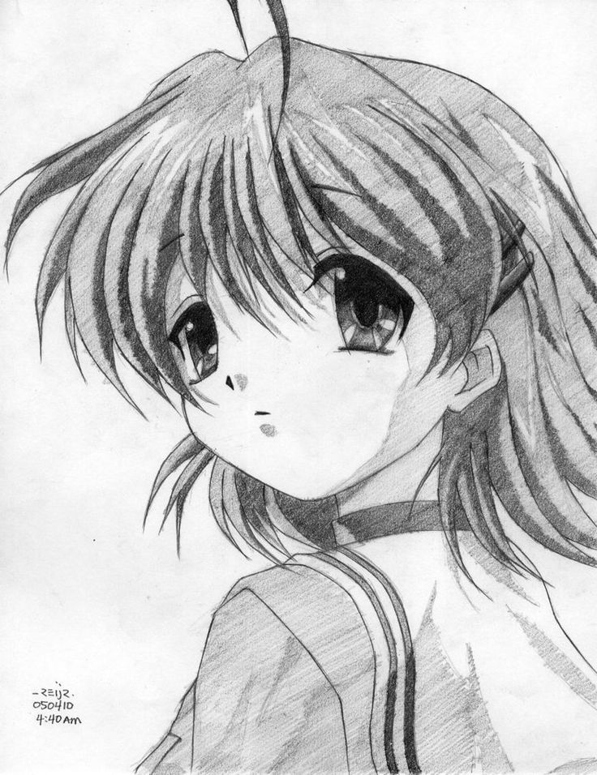

Tradução fiel
Cada diálogo é revisado para preservar o tom emocional, os detalhes da cultura japonesa e a essência das cenas mais marcantes.
Uma jornada emocional em português, repleta de amizade, perdas e momentos que ficam no coração.

Cada diálogo é revisado para preservar o tom emocional, os detalhes da cultura japonesa e a essência das cenas mais marcantes.
Edição, timing e cartas com cuidados especiais para garantir uma experiência fluida e agradável em qualquer plataforma.
O servidor é o espaço para discussões, lançamentos, ideias e interação com a equipe por trás da produção.
Tomoya e Nagisa iniciam um caminho que mudará para sempre o rumo de suas vidas.
Novos laços surgem enquanto a amizade e a esperança ganham força no grupo.
Momentos simples, mas profundamente significativos, revelam o coração da história.
Fique por dentro dos lançamentos, participe das discussões e acompanhe os bastidores da produção.
Acessar servidor